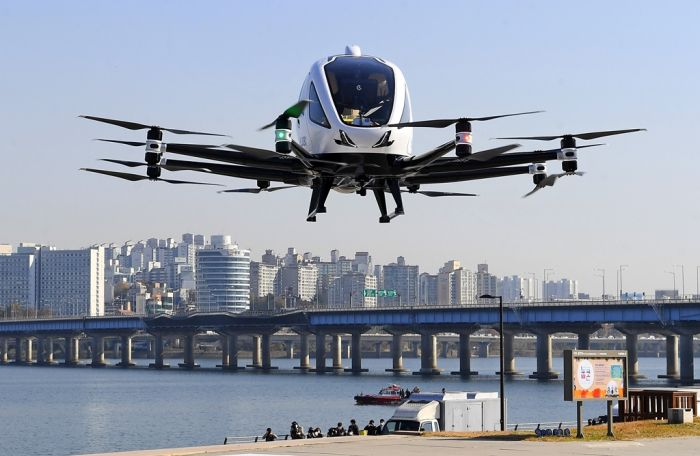

Technological Advancement
Modern technology is revolutionizing every aspect of aviation from the cockpit to customer service. Key innovations include:
Smart Aircraft and Automation
New-generation aircraft like the Airbus A350 and Boeing 787 Dreamliner are equipped with digital flight systems, real-time monitoring, and fuel-efficient engines.
Autopilot systems are now more advanced, allowing aircraft to fly with minimal manual control.
Airlines use predictive maintenance tools to identify issues before they cause delays.
Artificial Intelligence (AI) & Big Data
AI is being used for flight scheduling, customer service chatbots, and passenger screening.
Big data helps optimize routes, improve safety, and enhance the passenger experience.
Biometrics and Contactless Travel
Airports are increasingly adopting facial recognition, e-passports, and contactless boarding to streamline security and reduce wait times.
These features improve both security and convenience.
Urban Air Mobility (UAM)

The rise of electric vertical takeoff and landing (eVTOL) vehicles may soon change urban transport.
Companies like Joby Aviation and Lilium are testing air taxis, aiming to reduce road traffic in cities.

Post-Pandemic Recovery and Resilience
The COVID-19 pandemic brought the aviation industry to a standstill in 2020, causing historic losses. However, it also led to transformation and resilience-building:

Health and Safety Protocols
Enhanced cleaning procedures, HEPA filters, and social distancing measures are now standard.
Contactless check-ins, digital health passports, and mobile boarding have improved passenger confidence.
Digital Transformation
Airlines and airports accelerated their adoption of digital tools for bookings, tracking, and communications.
Mobile apps now handle everything from booking to baggage claim, offering a seamless travel experience.
Business Model Shifts
Many airlines diversified operations including focusing more on cargo transport due to reduced passenger demand.
Some fleets were downsized, and route networks were redesigned to be more flexible and efficient.
Environmental and Sustainability Initiatives
As climate concerns grow, the aviation industry is under pressure to reduce its environmental impact. Several initiatives are underway to make flying more sustainable:
Sustainable Aviation Fuels (SAFs)
SAFs are produced from renewable sources like plants, algae, or recycled waste.
They can reduce lifecycle carbon emissions by up to 80% compared to traditional jet fuel.
Airlines like KLM, Delta, and British Airways are already testing or using SAFs in regular flights.
Electric and Hybrid Aircraft
Research is ongoing into battery-powered and hybrid-electric aircraft for short-haul flights.
These could significantly reduce emissions and noise pollution, especially in regional aviation.
Carbon Offset Programs
Passengers can now pay to offset the emissions from their flights by supporting environmental projects.
Airlines also invest in reforestation and carbon capture initiatives.
Greener Airports
Many airports are adopting solar power, green buildings, and electric ground vehicles to lower their carbon footprint.
Some, like Heathrow and Changi, aim to become carbon-neutral in the next decade.
The aviation industry is undergoing a major transformation. As it recovers from the effects of the pandemic, it is embracing smarter technologies, greener solutions, and more resilient operations. These trends are not just shaping the future of flight, but also redefining the way we think about mobility, safety, and sustainability in a connected world.